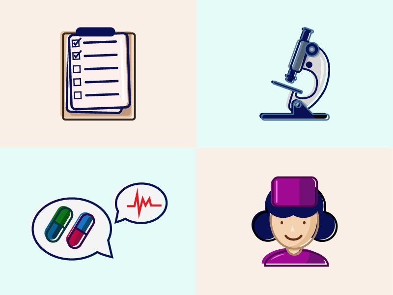

About You
Our Origin: A Tale of Love, Legacy, and Technology
In a world inundated with technological advances, the simple joys of a handwritten letter or the gentle hum of a rotary phone are
nostalgic memories for some and the preferred way of life for others. Among the latter is my cherished 93-year-old grandmother—a
testament to strength, wisdom, and a beacon of traditions.
While I navigated the digital age with ease, I saw her struggling to comprehend the myriad of functions a smartphone offers.
Tasks that were second nature to me were enigmatic challenges to her. Sending a message, making a video call, or even adjusting the
brightness seemed akin to solving complex puzzles. Her desire was straightforward: simplicity.
This stark difference in our digital experiences became the catalyst for the birth of GoldenAssist. I envisioned an application that
serves as a bridge between the older generation's love for simplicity and the undeniable advantages of modern technology.
A tool that made the technological realm accessible, manageable, and delightful for those who didn't grow up swiping screens or tapping apps.
GoldenAssist is more than just an app—it's a tribute to my grandmother and countless seniors like her. It embodies my commitment
to ensure that age never becomes a barrier to connection, communication, or convenience.
I created GoldenAssist to weave the essence of yesteryears into the fabric of today's digital age. It’s an effort to harmonize the
traditional with the contemporary. A dedication to all the grandparents who have stories to tell and memories to share.
Designed for Seniors
GoldenAssist is developed to simplify the usage of smartphones for older adults, integrating essential features into a user-friendly platform.
Whether it's making a call, setting a reminder, or tracking health metrics, GoldenAssist makes it easy.

Accessibility is Our Priority
GoldenAssist has been designed with accessibility in mind. We provide large, easy-to-read text, simple navigation, and intuitive user interfaces.
It's all part of our commitment to making technology more accessible to everyone, no matter their age or level of tech savviness.